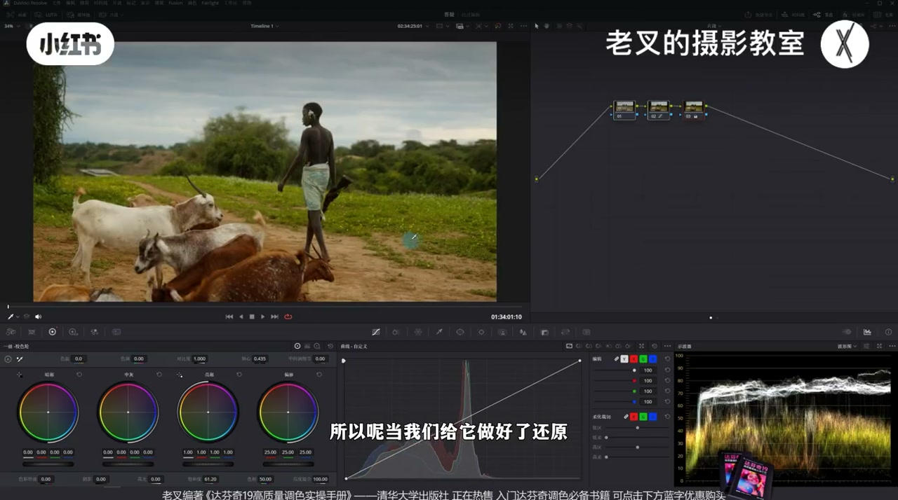
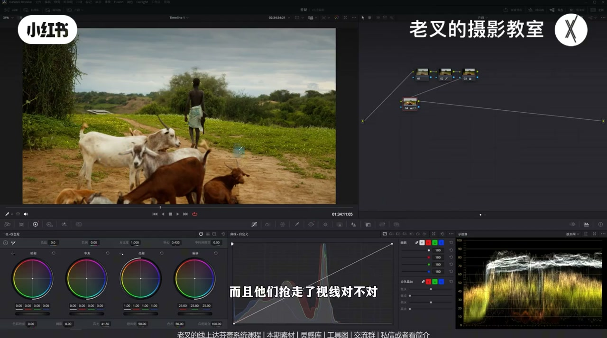
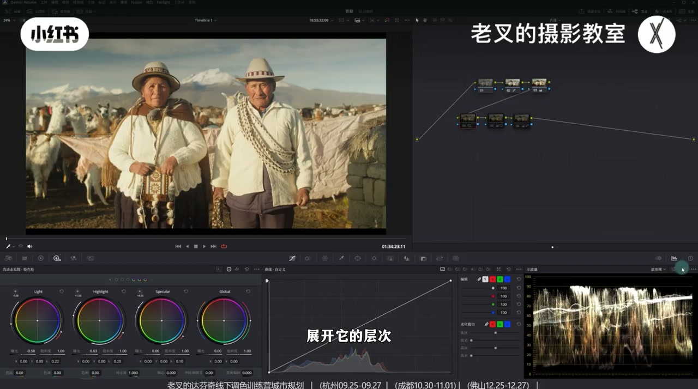
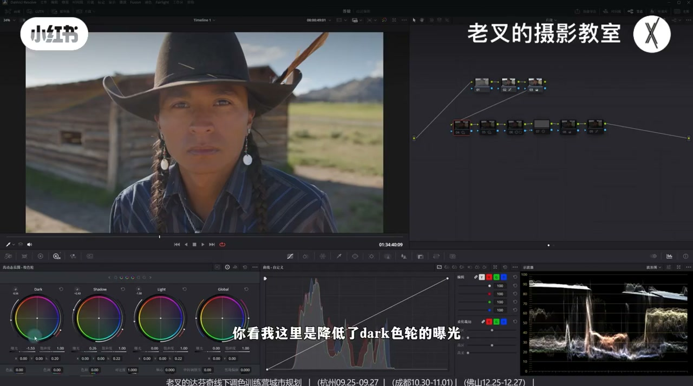
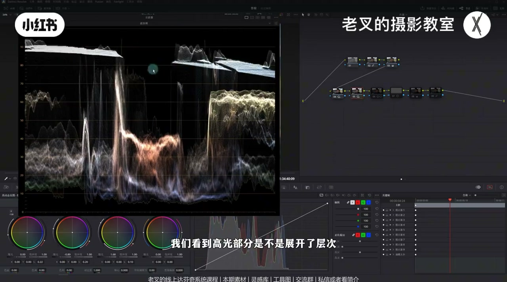
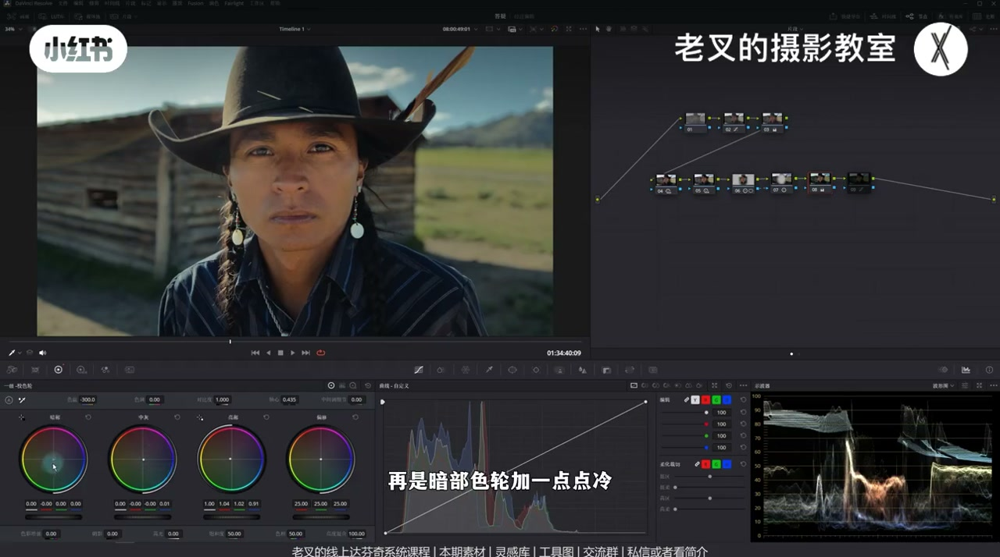

内容要点
老叉针对「调色时想法很多却不知从何下手」给出主线：先把曝光还原到画面该有的状态，质感往往已经到位大半。再用大范围遮罩重塑曝光分区（提亮主体、压暗抢戏区域），而不是小遮罩硬提人物留下明显痕迹。进阶上用 HDR 色轮在高光/暗部内部拉开层次，普通素材同样适用；曝光到位后再做冷暖风格化，调色就完成约八成。
知识结构
阴天牧羊对比：舒服＝曝光合适；还原后质感已在，不必先堆风格。
小遮罩提亮痕迹重；下半部大范围提亮+并行压暗近处羊群，重塑视线中心。
中间小窗只能提亮不能压暗；并行节点有融合，主体亮、其余暗才自然。
波形未过曝仍刺眼：压 Light、抬 Highlight 拉开亮面层次，再暗角与微蓝。
背光人物+亮天空：Shadow/Dark 与 Highlight/Specular 组合展暗展亮，再遮罩对比度护光感。
白平衡准且有高光时：降色温+亮部偏暖黄绿、中灰回调、暗部微冷；柔和对比度可选。
调色八成靠曝光：先还原，再大范围重塑分区，用 HDR 色轮在亮暗内部拉开层次；小遮罩硬提人物容易露痕迹。曝光舒服后，一级轮冷暖组合只是锦上添花。
00:00-00:31立题：舒服＝曝光合适，还原先做对
老叉开场说，很多朋友调色时想得很多，却不知道该怎么下手。他拿出阴天牧羊素材做左右对比：左边更舒服，舒服代表着合适——要让画面曝光符合它该有的情况，这就是还原的重要性。
做好还原之后，画面往往已经非常不错，质感该有的都有了。后面再谈遮罩与风格，都应建立在这条「先还原」的主线上。

00:31-01:58人物不够亮：大遮罩提亮，别用小窗硬提
还原后仍觉得地面略乱、人物不够亮。直觉会是给人物画小遮罩再提曝光——人物确实亮了，但关掉遮罩对比会发现痕迹太明显；私信作品里也常遇到「遮罩痕迹太重」，对本片而言是因为遮罩太小。
他反其道而行：给整个下半部分画大范围遮罩，用一级校色轮的高光滑块提亮。人物亮了，靠近镜头的羊群也亮起来并抢走视线，于是按住 Shift+P 或 Option+P 建并行节点，给近处羊与地面再画遮罩，降低中灰色轮曝光压暗。
这样重塑了曝光分区：遮罩画得大，几乎看不到痕迹；视线中心回到人物，下半部可略降饱和，远处曝光也被抬起，空间感增强。他强调：对这幅画面，颜色不调也已经很好看。

01:58-02:43反问：为何不直接在中间画遮罩？
有人会问：既然最终是让人物亮，为何不直接在中间画遮罩提高光？他演示后说——没有大问题，但效果不够好：中间小窗解决不了地面乱，也做不到「提亮主体的同时压暗近处」。
前面两步并行节点的本质，是让主体更亮、其余更暗；单纯中间提亮只能提亮不能压暗。再者，并行节点自带融合能力，效果更自然。
02:43-04:19进阶：高光区域拉开层次，波形一样也能更舒服
第二个案例左右对比，右边更好看，因为左边亮得刺眼——可波形并没有过曝。这是曝光的进阶用法：曝光区域层次的拉开。两边高光峰值亮度相近，但右边亮面里有「更亮」与「没那么亮」的层次，中灰也更暗，灰阶更丰富，整体更舒服。
做法：还原后若高光亮成一片，降低 HDR 色轮中 Light 的曝光，再提高 Highlight 的曝光，让人物受光面展开层次；波形上对应区段被拉开。脸部放大对比：以前亮成一片不好看，现在质感更明显。
还可加暗角收缩视线、让四周与中灰更暗；再开节点减一点色温暖一点蓝。曝光做到位，就完成了约八成工作。

04:19-06:42普通素材：暗部/高光组合展层次，对比度护光感
有人说前面都是高质量拍摄。他换更接近日常的素材：人物背光偏暗、天空过亮，光比不舒服。提亮暗面不是把整块暗部整体抬起，而是把暗部当作整体，提亮其中「没那么暗」的上半部分——用 Dark 降曝光、Shadow 提曝光，让暗部展开层次，人物不发灰还能略提亮。
天空区若波形仍有层次（不是过曝裁成一条横线），可新开节点用 Highlight 降、Specular 提，把高光再展开：特别亮的左上角可保持，相对没那么亮的区域更舒服、不刺眼。
若人物反差仍不够，画遮罩加对比度并略移轴心让其更亮；再按 Alt/Option+O 建外部节点压四周——同样用「加对比度 + 轴向右」保护背景光感，避免高光被一并压死。四个节点就能带来很大改观。他补充：调色很大程度上是在弥补前期灯光不足；能控光比会更好。


06:42-07:58曝光到位后再染色：晴天百搭冷暖组合
风格化在准确白平衡且画面有高光的前提下：略降色温，亮部色轮往左上加暖并略偏黄绿，中灰色轮往右下回调，暗部色轮加一点冷——这套组合百搭，晴天有阳光大概率适用。素材已传知识分享平台，可私信或看简介加入后免费自取。
最后可上柔和对比度（可加可不加）。与还原后对比，效果往往已经很好，力度自己把控；磨皮因时长不展开，想看达芬奇多种磨皮可留言。

完整转录（339段）
以下文本由 Whisper medium 模型自动转录，可能存在少量识别误差，已尽可能修正。
很多朋友在调色的时候总是想的非常多
但又不知道该怎么做
比如说这个阴天的素材
我们可以先看这两个画面
你会觉得哪个更好
左边的会更舒服对吧
舒服代表着什么
代表着合适
我们要让画面曝光
符合它该有的一个情况
这就是还原的重要性
所以当我们给它做好了还原
你会觉得还原后就已经非常不错了
对吧
质感该有都有了
但是我们看到地面
你会觉得地面有一点混乱
而且人物也不够亮
那你想的
既然人不够亮
我可能会给它画一个遮罩
然后给它稍微提高点曝光
那这样一做
确实可以让人物体谅
但是我们把遮罩一关
你会发现遮罩的痕迹太明显了
这也是很多朋友在私信
给我发他的作品的时候
经常会遇到的一个情况
你的遮罩痕迹太明显了
对于这个画面来讲
这是因为遮罩太小了
那我们其实可以反其道而行
怎么做呢
如果说我们给整个画面的地面
去都提亮会怎么样呢
比如说是这样的一个制造范围
我给整个下半部分
都画了一个遮罩
然后给它提亮
我这里选择的是
一级校色轮中的高光滑块
给它提亮了之后
大概到这个程度
这时候人物被提亮了
但是靠近镜头的这群羊也提亮了
而且他们抢走了视线
对不对
所以这时候需要把它们压暗
这时候我们可以按住
2D加P或者是Option加P
建立一个并行节点
给近处的羊和地面
也画一个遮罩
然后给它稍微压暗一些
我这里选择的是
降低中灰色轮的曝光
好 大概到这个程度
这样我们就重塑了曝光分区
首先你看不到任何制造的痕迹
因为我们制造画的非常大
对不对
而且这样做的行为
我们看画面的变化
你会感觉视线中心发生了改变
我们当然可以给下半部分
稍微降低一点饱和度
感觉饱和度有点高
是不是人物这个区域
它自然而然就变得更亮了
而且给画面的远处也提高了曝光
这样就能够增加
你画面的一个空间感
我们重塑了曝光分区
对于这个画面来讲
颜色不调也挺好看的
但是你可能会说
你既然这样做的话
我为什么不直接在中间画一个遮罩
比如说是这样的一个情况
然后给它提高点曝光
也同样提高点高光滑快
大概到这个程度
这样做可不可以呢
你说它有大问题也没有
但是它效果不是特别好
因为这并不能解决
我们说地面乱的问题
我们刚刚做的这两个
并行节点的行为
首先是好几点是吧
下半部分都体谅了
然后再压暗了
近处的这个阳和地面
它本质上是为了体谅人物
同时压暗近处的这些区域
我们是在让主体更亮
其余部分更暗
而我们单纯的在中间画一个遮罩
给它体谅的这个行为
能体谅但是不能压暗
所以这个效果并不是特别好
再一个
我们前面这个行为是并行节点
它有融合的能力
效果会相对自然一些
再看这个案例
同样我们看这两个画面
你觉得哪个会更好看
你是不是感觉右边会好看一些
为啥呀
左边的问题书在哪儿呢
是不是它亮得太刺眼了
可是我们看到左边的波形图
它并没有过旷
这就是我们对曝光的一个进阶使用
曝光区域层次的拉开
这两个画面它的波形图
你仔细看高光
它其实一样的亮度对不对
但是右边就能够舒服一些
这是因为右边画面中的亮面
它不只有亮
还有更亮
以及没那么亮的亮
在高光区域展开了更多的层次
同时右边画面中的中灰也更暗
让画面产生更多的灰
这就能让你的画面
整体看着会更加舒服一些
那这个理解起来会有点抽象
大家其实可以看上一期视频
有讲到这个思路
那我们要怎么做呢
其实非常简单
先给它做好还原
还原好了之后
我们知道它的高光太亮了
对不对
亮成一片了
那么我们就可以考虑
通过降低HDR色轮中
Light色轮的曝光
再提高点Highlight色轮的曝光
来让画面人物受光面
也就是它的高光处
展开它的层次
我们看波形图
这是调整前
这是调整后
你会发现
这一部分是不是拉开了
拉开了
那就代表着它展开了层次
我们再放大看人物的脸
这是之前的画面
亮成一片
你说它有问题呢
它没问题
可是它不好看
但是我们通过这样的行为
能够让它的脸上的质感
更加明显
左边这位女士也是一样的
它的层次更加明显
那当然我们也可以考虑
给画面再加一个暗角
收缩一下视线
让四周压得更暗
也就是让中晖更暗
让画面产生更多的灰
也可以再来一个节点
给整体加一点点蓝
我这里选择的是减了一点色温
你看加了蓝之后
整体的画面效果就挺好了
对不对
因为我们曝光做到位了
它就能够完成80%的工作
那这时候又有朋友会说
你这些都是高质量拍摄的素材
我拍不了这么好的
那我们来看这个画面
这个是不是就非常接近
我们拍摄的素材了
对吧
我们也可以用一样的思路
把它从这样变成这样
那这几个素材呢
我都传到了现场分享平台
大家可以私信或是看我剪辑来
加入后面免费自取
还有答复你的线上系统课程
和线下调色训练营
那这怎么做呢
首先我们观察一下画面
人物呢
处在背光面
它有点暗
同时天空又太亮了
整体的曝光配比是不舒服的
光比实在太大了
这个我们可以通过HDR色轮来优化
我们看到波星图
人物处在这个区域
对不对
我们把手要放上面
它是在这个区域
我们上一期说过
要提亮暗面
不是要把整个暗部
都给它往上抬
而是要把暗部视作一个整体
提亮上半部分
那至于暗部你要不要再往下压呢
看你具体的情况
所以呢我们可以考虑
利用Shadow色轮和Dark色轮的组合
你看我这里是降低了
Dark色轮的曝光
提高了Shadow色轮的曝光
我们看波星图
我们是不是让暗部展开了它的层次
同时让暗部没那么暗的部分
给它往上抬了
你会发现人物不发挥的同时
还能把它稍微提亮一些
那接下来就是天空
天空呢是这个区域
它其实是有层次
它不像是那种过曝的被裁切
只有一条横线的那种情况
那既然有层次
我们就可以把它的层次
展得再开一些
我这里新开了一个节点
实际上你在4号节点一起做
也是可以的
我这里只是为了展示它的区别
那这里呢我就要用到
Highlight色轮和Specular色轮的一个组合
我降低了Highlight色轮的曝光
提高了Specular色轮的曝光
我们先看波星图不看画面
我们看到
高光部分是不是展开了层次
而对于画面来讲的话
你会发现
天空的质感会更加舒服
它有亮的左上角
它特别特别亮的部分
保持不变
但是这边没有那么亮的
它能够更加舒服
看着不会那么刺眼
对不对
那效果还挺好的
然后呢
我又觉得人物的反差是不够的
所以呢我又画了一个遮罩
然后呢给它增加了一点对比度
稍微向左移动了一点
轴心要让它稍微亮一点
这个没什么好说的
然后呢
按住Alt加O或者是Option加O
建立一个外部节点
把四周再一次压
而我压的行为同样是
通过对比度和轴心的组合
增加对比度的同时
再向右移动轴心
为什么我这里是通过增加对比度
而不是降低别的一个行为呢
这是为了保护背景中的光感
让它的高光不要受太多的影响
那这个呢我们这一期不细说
之前讲过非常多次的
对比度和轴心的组合
那么我们通过这四个节点
我们给画面带来了一个
非常大的一个改观
效果还是非常好的
所以我一直说
调色在很大程度上
是为了在弥补
前期灯光不足的遗憾的
如果我们前期能给人物打个光
控制下光比的话
那画面肯定能优化的不少
然后呢我们也可以给这个画面
加一点风格化的颜色
我这里是做了这个行为
我们先看画面结果
你看这种风格
其实还是不错的对吧
怎么做呢
非常非常简单
首先在一个准确
白平衡的画面前提下
同时它又得有高光
那么我们就可以先考虑
降低一点点色温
然后再将亮部色轮
往左上角移动
给高光加点暖
要稍微多往黄色方向靠一靠
加一点暖绿的感觉
然后呢再将中灰色轮
往右下角做回调
再是暗部色轮加一点点冷
这个组合给画面带来的风格
其实非常非常好用
而且非常百搭
只要你是晴天有阳光
就大概率能适用这种风格
大家四载邻居过去之后呢
也可以尝试着操作一下
最后呢我还上了一个
柔和对比度
这个就不多说了
讲过非常多次了
柔和对比度当然还是那句话
你可加可不加问题都不大
最后我们再次将这个画面
与还原后的画面做下对比
你会感觉效果是非常不错对吧
当然力度你自己把控啊
你觉得这个太强了
你就少做一点
人物如果想要磨皮也可以
那磨皮呢碍于时长
我们这期就先不分享了
大家如果想知道
怎么用达芬吉做更好的磨皮
可以评论留言
想看的人如果比较多的话
我会单独再做一期
多种达芬吉磨皮的方式